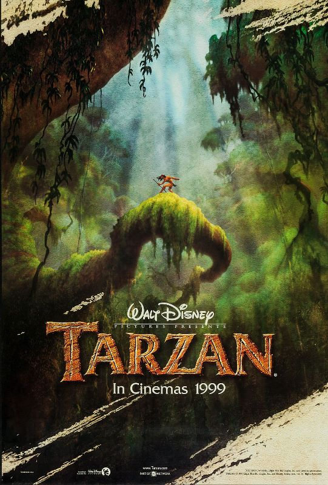

ABOUT the movie Tarzan(1999)
In the 1999 movie Tarzan, it follows the story of a young boy who is raised by apes. In the beginning of the movie, the best song to ever be made "Two Worlds" by Phil Collins plays as it shows how a mother ape (Kala) loses her baby to a leopard (Sabor). Following the progression of the intro it cuts to Tarzan's mother and father haven crased on an unknown island and began creating a new life for themelves. Soon after they had fully settled down, they had the baby "Tarzan". After living a nice peaceful life, tragedy struck as Sabor struck again, however, only killing Tarzan's parents leaving him alone. As the intro finally was closing to an end, Kala began to hear cries as Tarzan had woken up from all the comotion that Sabor and his parents caused. Kala rushed to his side, only to be ambushed by Sabor, barely making it out alive with Tarzan in her grasp after putting up a fierce fight with Sabor.
Now that the beginning intro had come to an end, You watch as the once child of man now grows up in a herd of Apes. Learning how to hunt, thrive and socialize with his new family. As he grew older, his body maturing along side his best friend Terk (an ape around his age) they continue to live until another tragedy stuck, this time Tarzan fended for his new family, in turn killing Sabor, the leapord who had killed both Kala' previous child and Tarzan's parents. However, that is not all to this amazing story. I will not spoil more, so give it a watch and fall in love not only with the music but the characters as well.

Director: Kevin Lima & Chris Buck
Company:Disney
Genre:Children's Film; Animation; Comedy; Drama; Musical; Adventure; Romance
Rating:89% Rotten Tomatoes. Rated G
Run time:1h 28m